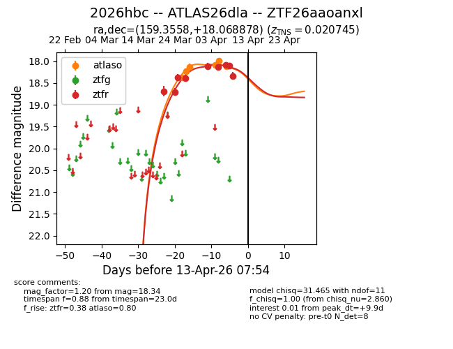
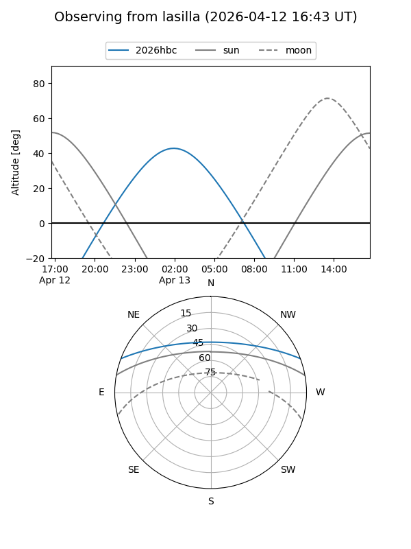
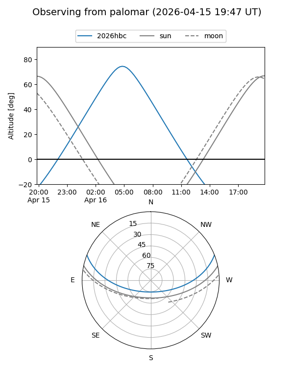
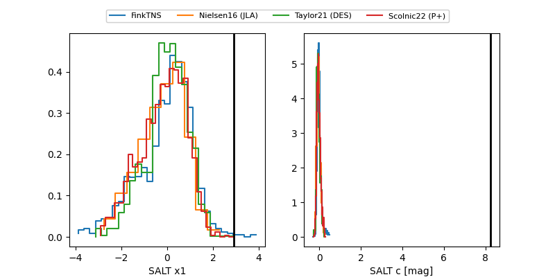

2026hbc
Target 2026hbc at 2026-04-13 08:03
Aliases and brokers:
FINK: link
Lasair: link
ALeRCE: link
TNS: link
YSE: link
alt names
ZTF26aaoanxl (ztf,fink_ztf)
2026hbc (tns,yse)
ATLAS26dla (atlas)
Coordinates:
equatorial (ra, dec) = 159.3558,+18.06888
equatorial (HMS+DMS) = 10:37:25.40,+18:04:07.96
galactic (l, b) = (222.1786,+57.88117)
Flags:
Photometry:
last atlaso=18.11, ztfr=18.34
6 atlaso, 9 ztfr detections
Lightcurve

Visibility


Additional plots
